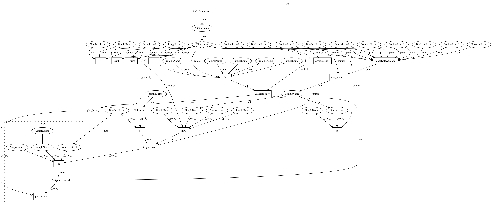

ecfb7febc19941314261a644ec37787ffbf6d4ad,snntoolbox/models/cifar_cnn_non_overlap_pool.py,,,#,17
Before Change
model.compile(loss="categorical_crossentropy", optimizer=sgd,
metrics=["accuracy"])
if not data_augmentation:
print("Not using data augmentation or normalization")
// early_stopping = EarlyStopping(monitor="val_loss", patience=3)
history = model.fit(X_train, Y_train, batch_size=batch_size,
validation_data=(X_test, Y_test), nb_epoch=nb_epoch)
plot_history(history)
else:
print("Using real time data augmentation")
// this will do preprocessing and realtime data augmentation
datagen = ImageDataGenerator(
featurewise_center=False, // set input mean to 0 over the dataset
samplewise_center=False, // set each sample mean to 0
// divide inputs by std of the dataset
featurewise_std_normalization=False,
samplewise_std_normalization=False, // divide each input by its std
zca_whitening=False, // apply ZCA whitening
// randomly rotate images in the range (degrees, 0 to 180)
rotation_range=0,
// randomly shift images horizontally (fraction of total width)
width_shift_range=0.1,
// randomly shift images vertically (fraction of total height)
height_shift_range=0.1,
horizontal_flip=True, // randomly flip images
vertical_flip=False) // randomly flip images
// compute quantities required for featurewise normalization
// (std, mean, and principal components if ZCA whitening is applied)
datagen.fit(X_train)
log = np.empty([nb_epoch, 4])
// fit the model on the batches generated by datagen.flow()
model.fit_generator(datagen.flow(X_train, Y_train, batch_size=batch_size),
samples_per_epoch=X_train.shape[0], nb_epoch=nb_epoch,
validation_data=(X_test, Y_test))
score = model.evaluate(X_test, Y_test, batch_size=batch_size)
print("Test score:", score[0])
print("Test accuracy:", score[1])
After Change
from snntoolbox.io_utils.plotting import plot_history
batch_size = 128
nb_classes = 10
nb_epoch = 80
data_augmentation = True
// input image dimensions
img_rows, img_cols = 32, 32
// the CIFAR10 images are RGB
img_channels = 3
// the data, shuffled and split between tran and test sets
(X_train, y_train), (X_test, y_test) = cifar10.load_data()
X_train = X_train.astype("float32")
X_test = X_test.astype("float32")
X_train /= 255
X_test /= 255
Y_train = np_utils.to_categorical(y_train, nb_classes)
Y_test = np_utils.to_categorical(y_test, nb_classes)
print("X_train shape:", X_train.shape)
print(X_train.shape[0], "train samples")
print(X_test.shape[0], "test samples")
model = Sequential()
model.add(Convolution2D(32, 3, 3, border_mode="valid",
input_shape=(img_channels, img_rows, img_cols)))
model.add(Activation("relu"))
model.add(MaxPooling2D(pool_size=(2, 2), strides=(3, 3)))
model.add(Convolution2D(32, 3, 3, border_mode="valid"))
model.add(Activation("relu"))
model.add(MaxPooling2D(pool_size=(2, 2), strides=(3, 3)))
model.add(Dropout(0.25))
model.add(Flatten())
model.add(Dense(512))
model.add(Activation("relu"))
model.add(Dropout(0.5))
model.add(Dense(nb_classes))
model.add(Activation("softmax"))
model.compile(loss="categorical_crossentropy", optimizer="adadelta",
metrics=["accuracy"])
early_stopping = EarlyStopping(monitor="val_loss", patience=3)
history = model.fit(X_train, Y_train, batch_size=batch_size, nb_epoch=nb_epoch,
verbose=1, validation_data=(X_test, Y_test))
// callbacks=[early_stopping])
score = model.evaluate(X_test, Y_test, verbose=0)
print("Test score:", score[0])
print("Test accuracy:", score[1])
plot_history(history)
filename = "{:2.2f}".format(score[1] * 100)+".cifar.non.overlap.pool"
open(filename + ".json", "w").write(model.to_json())
model.save_weights(filename + ".h5", overwrite=True)
In pattern: SUPERPATTERN
Frequency: 4
Non-data size: 20
Instances
Project Name: NeuromorphicProcessorProject/snn_toolbox
Commit Name: ecfb7febc19941314261a644ec37787ffbf6d4ad
Time: 2016-08-16
Author: duguyue100@gmail.com
File Name: snntoolbox/models/cifar_cnn_non_overlap_pool.py
Class Name:
Method Name:
Project Name: NeuromorphicProcessorProject/snn_toolbox
Commit Name: ecfb7febc19941314261a644ec37787ffbf6d4ad
Time: 2016-08-16
Author: duguyue100@gmail.com
File Name: snntoolbox/models/cifar_cnn_avg_max_pool.py
Class Name:
Method Name:
Project Name: NeuromorphicProcessorProject/snn_toolbox
Commit Name: ecfb7febc19941314261a644ec37787ffbf6d4ad
Time: 2016-08-16
Author: duguyue100@gmail.com
File Name: snntoolbox/models/cifar_cnn_larger_pool.py
Class Name:
Method Name:
Project Name: NeuromorphicProcessorProject/snn_toolbox
Commit Name: ecfb7febc19941314261a644ec37787ffbf6d4ad
Time: 2016-08-16
Author: duguyue100@gmail.com
File Name: snntoolbox/models/cifar_cnn_deeper_max.py
Class Name:
Method Name: